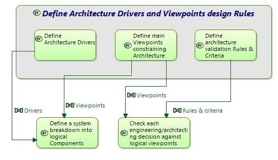

Define Architecture Drivers and Viewpoints design Rules
Engineering activity
Engineering activities > Engineering Activities & Perspectives > DESIGN THE SOLUTION ARCHITECTURE > Design LOGICAL ARCHITECTURE > Define Architecture Drivers and Viewpoints design Rules
Define architecture drivers
Architecture drivers are major Stakes & Properties that architecture should favour, depending on the domain and product policy.
e.g. ease of evolution, real-time constraints, ease of separate development & sub-contracting, scalability, portability, certification, 24x7 availability...
These are design priorities that will orient and constrain architecture definition, when having to make choices among various possibilities, in order to ease and secure development and / or system behaviour.
As an example, favouring real time constraints may hinder modularity, or loose coupling between components; portability may prevent from using advanced features of the underlying platform…
Define main Viewpoint Rules & Criteria
Define and associate to each viewpoint, viewpoint design rules (constitution and checking rules) in order to express how to build, how to test architecture against each viewpoint.
Define also criteria to confront and reconcile all viewpoints (at least, priority between viewpoints).
Each architecture design decision should further be checked against architecture drivers compliance.
Each design and development choice impacting these drivers should also be justified and checked (e.g. middleware technology threatening modularity or performance…)
Input:
- output of operational and system/SW need analyses
- List of predefined viewpoints rules to analyse the architecture
Output:
- Architecture drivers to be applied to system architecture
- Checklists to confront design choices to architecture drivers
- Viewpoint-analysis rules
Target documents:
- System/Segment Design Document (SSDD)
Verification and Consistency checks:
External consistency:
- Between User Requirements, industrial constraints (reuse, product line…) and Architecture Drivers
Internal consistency:
- Between Architecture drivers and selected Viewpoints & rules
Related Diagrams
3Define Architecture Drivers and Viewpoints design Rules Context

This figure describes the interactions of the considered task with other engineering activities.
Diagrams displaying "Define Architecture Drivers and Viewpoints design Rules"
- 4 - Customer Work
- 3-Define Architecture Drivers and Viewpoints design Rules - Context
- 5 - Models Management
- 4 - IVVQ Manager Work
- 4 - Sub-contractor Work
- 4 - Non functional Specialty Engineering Work
- 4 - Data & Interface Manager Work
- 2-Design LOGICAL ARCHITECTURE - Contents
- 4 - Product Line & Configuration Managers Work
- 1 - First Level Tasks of Architecture Definition Perspectives
- 4 - Chief Architect Work